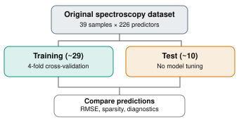
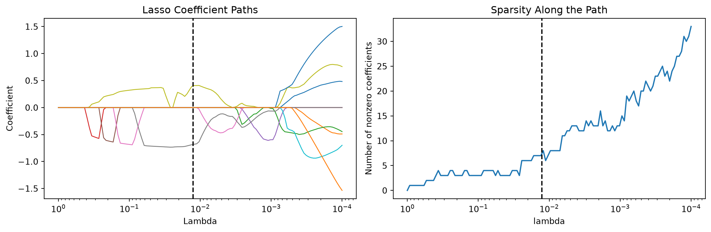
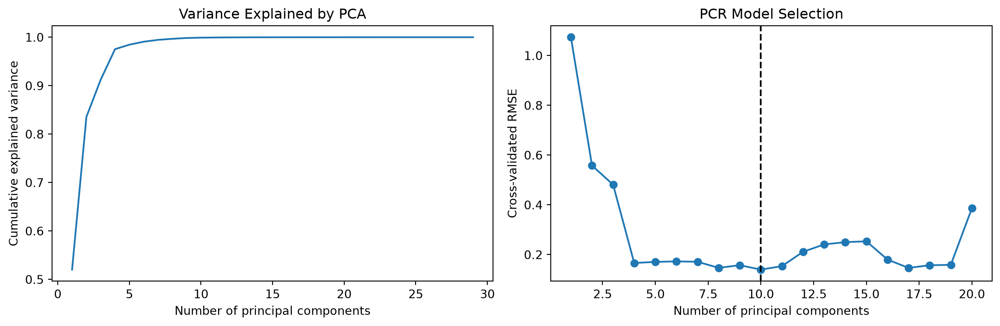
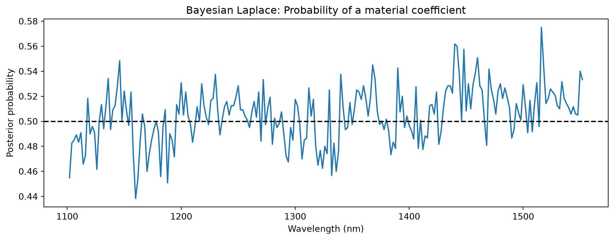
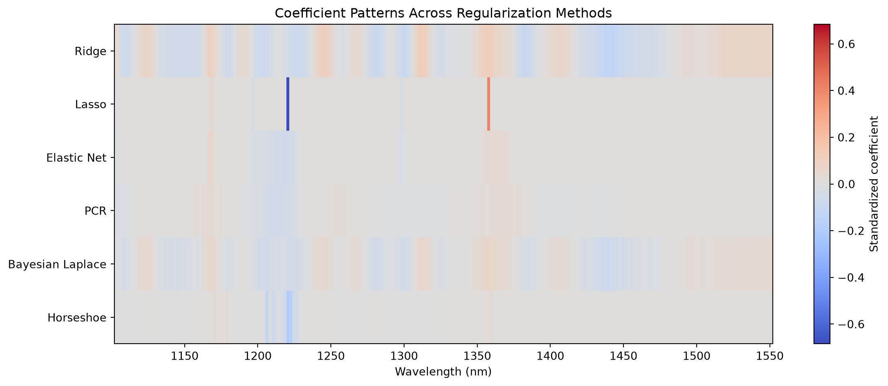

11Computational Exploration of Regularization in High-Dimensional Regression
The central objective of this exploration is to understand how different regularization methods behave when the number of predictors substantially exceeds the number of observations, especially when predictors are highly correlated and the data contain unusual observations.
1 Data Selection and Experimental design
1.1 Near-Infrared Spectroscopy of Gasoline (Octane)
The selected dataset is the Octane NIR Spectroscopy dataset, described by Esbensen, Schoenkopf, and Midtgaard (1994). Each observation represents a gasoline sample measured using near-infrared spectroscopy. The objective is to predict its octane number from absorbance measurements recorded at different wavelengths.
Quality Control of Gasoline
Unlike standard benchmark dataset, this dataset also has 6 samples contain added alcohol, creating a subgroup for studying the behavior of regularized estimators. The wavelengths range from 1102 to 1552 nanometers, with measurements every 2 nanometers. The continuous response is the octane number.
This dataset is suitable because of four properties:
With \(p=226\) and \(n=39\), the OLS estimator is not uniquely determined without additional assumptions.
Adjacent wavelengths measure nearby parts of a continuous spectrum, so the predictors are not independent.
Although each observation has 226 predictors, a much smaller number of latent spectral patterns may explain most of the variation.
The alcohol-containing samples allow us to examine whether shrinkage and variable selection provide reliable predictions when the observations differ chemically.
1.2 Statistical formulation
Let \(X \in \R^{n\times p}\), \(y\in \R^{n}\), \(\beta\in \R^p\). Our regression model is
In the exploration, \(n=39\) and \(p=226\). The methods differs in their treatment of the unknown coefficient vector.
Method
Regularization
Primary property to investigate
Ridge
\(L_2\) penalty
Continuous shrinkage and numerical stability
Lasso
\(L_1\) penalty
Exact sparsity and variable selection
Elastic Net
\(L_1\) + \(L_2\) penalty
Correlated-predictor grouping
PCR
Principle component truncation
Low-rank approximation
Bayesian Lasso
Laplace prior
Posterior shrinkage and uncertainty
Bayesian Horseshoe
Global-local shrinkage
Strong shrinkage with heavy-tailed escaped
We will also compare the coefficient patterns produced by the methods.
1.3 Experimental protocol
We will use a stratified 75%/25% train/test split, preserving the approximate proportion of alcohold-containing samples. All methods receive the same predictor matrix and training responses.

Experimental protocol
The frequentist methods will use the same four cross-validation folds for tuning. The Bayesian models will use priors specified before examining test outcomes, followed by posterior inference using PyMC.
2 Data preparation
2.1 Load the dataset
import numpy as np import pandas as pd import matplotlib.pyplot as plt import requests import rdata from pathlib import Path SEED =6400url ="https://raw.githubusercontent.com/cran/rrcov/master/data/octane.rda"path = Path("octane.rda")ifnot path.exists(): response = requests.get(url, timeout=60) response.raise_for_status() path.write_bytes(response.content)df = rdata.read_rda(path)["octane"]# first column is the response; the others are spectray = df.iloc[:, 0].to_numpy(dtype=float)X = df.iloc[:, 1:].to_numpy(dtype=float)wavelengths = np.arange(1102, 1553, 2)print("Predictor matrix:", X.shape)print("Response vector:", y.shape)print("Response range:", y.min(), "-", y.max())
The dataset is loaded as a numerical matrix. The wavelength ordering is preserved, which is important because adjacent coefficients correspond to physically adjacent measurements. We will also retain the known alcohol-containing sample labels for the experimental design:
This allows coefficient magnitudes to be interpreted on comparable scales. A coefficient represents the change in the standardized response associated with a one-standard-deviation increase in a predictor, holding the other predictors fixed.
The frequentist models will use a Pipeline so that their scaling parameters are recomputed inside each cross-validation fold. This avoids leakage from validation observations into their preprocessing.
For the Bayesian models, the displayed X_train_z and y_train_z will be used directly. Both were calculated using training data.
2.4 Investigate the rank and singular values
Before applying regularization, we should understand the numerical problem we are trying to solve. The standardized design matrix has at most \(n_\text{train} - 1\) linearly independent columns because centering removes one degree of freedom.
Thus,
\[
\rank(X^*_{\text{train}})\leq n_\text{train} - 1 \ll p.
\]
Consequently, the Gram matrix
\[
(X^*_\text{train})^{\top}X^*_\text{train}
\]
is singular, so its ordinary inverse does not exist.
More importantly, even among the nonzero singular directions, some may have extremely small singular values. Those directions can amplify estimation noise. We can examine this using the singular value decomposition:
\[
X^{*}_\text{train} = UDV^\top
\]
U, singular_values, Vt = np.linalg.svd(X_train_z, full_matrices=False)rank = np.linalg.matrix_rank(X_train_z)# correlation between neighboring wavelengths corr = np.corrcoef(X_train_z, rowvar=False)adjacent_corr = np.abs(np.diag(corr, k=1))print("Matrix rank:", rank)print("Number of predictors:", X_train_z.shape[1])print("Median adjacent |correlation|:", np.median(adjacent_corr))fig, ax = plt.subplots(figsize=(8,5))ax.semilogy(np.arange(1, len(singular_values) +1), singular_values, marker ="o", markersize=4)ax.set_xlabel("Singular value index")ax.set_ylabel("Singular value (log scale)")ax.set_title("Singular Value Spectrum")plt.tight_layout()plt.show()
Matrix rank: 28
Number of predictors: 226
Median adjacent |correlation|: 0.999171969117818
Difference between implementations: 1.4718241106776618e-12
The two coefficient vectors should agree up to floating-point error. Ridge solution can be obtained from a matrix whose dimension is determined by the number of observations rather than the number of features.
Property 2: Ridge applies smoth shrinkage to singular direction
Using the SVD,
\[
\hat \beta_R = V(D^2 + \lambda I)^{-1} D U^\top y
\]
This visualization shows that ridge regularizes the contribution of the singular directions continuously rather than deleting individual predictors. As a consequence, the ridge coefficient vector is generally dense.
3.2 Lasso regression: Sparsity and variable selection
Unlike Ridge, the \(L_1\) penalty is not differentiableat zero. This allows a solution to contain coefficients that are exactly zero, making Lasso useful for variable selection.
Lasso is solved by coordinate descent, which updates individual coefficients and takes advantage of the soft-thresholding property. The max_iter parameter allows the optimization algorithm sufficient iterations when predictors are strongly correlated. The convergence tolerance controls the numerical accuracy of the result.
Property 1: Verify the KKT conditions numerically
One advantage of using this dataset is that we can verify an important mathematical property directly. For Lasso, the KKT conditions imply
Both quantities are small, within the numerical optimization tolerance. The result demonstrates why some coefficients are set exactly to zero. Their residual correlations are not large enough to overcome the penalty threshold.
Property 2: The regularization path
We can investigate how the coefficients enter and leave the model as the penalty changes.
from sklearn.linear_model import lasso_path path_alphas, path_coefs, _ = lasso_path(X_train_z, y_train_z, alphas = np.geomspace(1.0, 1e-4, 120), max_iter =10000, tol=1e-5)nonzero_counts = (np.abs(path_coefs) >1e-7).sum(axis=0)fig, ax = plt.subplots(1, 2, figsize=(12, 4))# regularization paths for prominent coefficients top_features = np.argsort(np.max(np.abs(path_coefs), axis=1))[-12:]for j in top_features: ax[0].plot(path_alphas, path_coefs[j], lw=1)ax[0].axvline(lasso_alpha, ls="--", color="black")ax[0].set_xscale("log")ax[0].invert_xaxis()ax[0].set_xlabel("Lambda")ax[0].set_ylabel("Coefficient")ax[0].set_title("Lasso Coefficient Paths")# sparsity along the path ax[1].plot(path_alphas, nonzero_counts)ax[1].axvline(lasso_alpha, ls="--", color="black")ax[1].set_xscale("log")ax[1].invert_xaxis()ax[1].set_xlabel("lambda")ax[1].set_ylabel("Number of nonzero coefficients")ax[1].set_title("Sparsity Along the Path")plt.tight_layout()plt.show()

As \(\alpha\) increases, stronger regularization tends to produce fewer active predictors. However, individual coefficients do not change monotonically, and correlated predictors can enter or leave the active set as the penalty varies.
Here, \(\gamma\in (0, 1)\) controls the balance between the \(L_1\) and \(L_2\) penalties. When \(\gamma = 1\), Elastic Net reduces to Lasso. For smaller \(\gamma\), the quadratic penalty becomes more important, encouraging predictors to have more similar coefficient values. We tune both \(\gamma\) and \(\lambda\).
The parameter alpha and l1_ratio corresponds to \(\lambda\) and \(\gamma\), respectively. The quadratic component improves the conditioning of the objective. When \(0< \gamma<1\) and \(\lambda>0\), the Elastic Net objective is strictly convex, giving a unique coefficient vector.
Property: Compare coefficient selection in correlated spectral regions
We plot Lasso and Elastic Net coefficients against their physical wavelengths.
3.4 Principal Component Regression: Regularization by projection
PCR takes a different approach. Rather than penalizing coefficients in the original feature space, it projects the predictor matrix onto a lower-dimensional subspace and performs OLS in that space.
and the coefficient vector in the original feature space is
\[
\hat\beta_{\text{PCR}} = V_k \hat \theta_k
\]
The parameter \(k\) is the regularization parameter: choosing fewer principle components imposes stronger dimensionality reduction.
from sklearn.decomposition import PCA from sklearn.linear_model import LinearRegression # maximum number of nondegenerate components# permitted in every CV training fold min_fold_train =min(len(tr) for tr, _ in cv)max_k = min_fold_train -1pcr_search = GridSearchCV(estimator=Pipeline([("scale", StandardScaler()), ("pca", PCA(svd_solver="full")), ("regressor", LinearRegression())]), param_grid={"pca__n_components": list(range(1, max_k +1))}, cv = cv, scoring="neg_mean_squared_error")pcr_search.fit(X_train, y_train_z)pcr_model = pcr_search.best_estimator_best_k = pcr_search.best_params_["pca__n_components"]pca_fitted = pcr_model.named_steps["pca"]linear_fitted = pcr_model.named_steps["regressor"]# recover coefficients in the standardized feature spacepcr_beta = pca_fitted.components_.T @ linear_fitted.coef_ print("Selected number of components:", best_k)print("Recovered coefficient vector shape:", pcr_beta.shape)
Selected number of components: 10
Recovered coefficient vector shape: (226,)
An important computational detail is that PCA is fitted separately within each cross-validation fold. Fitting PCA once before cross-validation would leak information about the validation predictors into the estimated principal directions.
We also restrict \(k\) according to the smallest cross-validation training fold, rather than the original dataset size. This prevent us from attempting more nondegenerate components than the fold can support.
Property 1: Variance explained versus predictive usefulness
The principal components are constructed to explain variation in \(X\).
pca_full = PCA(svd_solver="full").fit(X_train_z)cumulative_variance = np.cumsum(pca_full.explained_variance_ratio_)k_values = np.array(pcr_search.cv_results_["param_pca__n_components"], dtype=int)cv_rmse = np.sqrt(-pcr_search.cv_results_["mean_test_score"])fig, ax = plt.subplots(1, 2, figsize=(12, 4))ax[0].plot(np.arange(1, len(cumulative_variance) +1), cumulative_variance)ax[0].set_xlabel("Number of principal components")ax[0].set_ylabel("Cumulative explained variance")ax[0].set_title("Variance Explained by PCA")ax[1].plot(k_values, cv_rmse, marker="o")ax[1].axvline(best_k, color="black", ls="--")ax[1].set_xlabel("Number of principal components")ax[1].set_ylabel("Cross-validated RMSE")ax[1].set_title("PCR Model Selection")plt.tight_layout()plt.show()

Property 2: Ridge versus PCR as spectral filters
Although Ridge and PCR appear to be very different procedures, both can be understood as transformations of the singular values of the design matrix.
As we can see, PCR is a form of regularization, even though its final regression step uses OLS. The regularization is imposed through its restriction to a lower-dimensional subspace.
4 Bayesian regularization using PyMC
The previous methods minimize a penalized objective function. In a Bayesian setting, regularization introduced through the prior distribution on the regression coefficients.
import pymc as pm import arviz as az import pytensor.tensor as pt n_train, p = X_train_z.shape laplace_scale =0.15with pm.Model(coords={"wavelength": wavelengths}) as bayesian_laplace:# unpenalized intercept intercept = pm.Normal("intercept", mu=0, sigma=1)# unknown observation noise sigma = pm.HalfNormal("sigma", sigma=1)# Normal-exponential mixture omega = pm.Exponential("omega", lam=1/(2*laplace_scale**2), dims="wavelength") z = pm.Normal("z", mu=0, sigma=1, dims="wavelength") beta = pm.Deterministic("beta", z*pt.sqrt(omega), dims ="wavelength") mu = intercept + pm.math.dot(X_train_z, beta) pm.Normal("y_obs", mu=mu, sigma=sigma, observed=y_train_z)
We use a non-centered parametrization because sampling under the underlying standard-normal variables can make the posterior geometry easier to navigate.
The No-U-Turn Sampler (NUTS) generates posterior draws by using gradients of the log-posterior distribution. draws=600 and chains=2 produce 1,200 retained draws in total. The 800 tuning iterations per chain are used for sampler adaptation and discarded.
_Computational consideration. A PyMC model with 226 coefficients and another 226 latent variable is much more expensive than a single Lasso optimization. NUTS explores the posterior rather than locating one minimum. For faster sampling, PyMC also supports the nutpie sampler as an optional backend.
Property: Posterior shrinkage is not variable selection
We now compare the Bayesian posterior mean with the frequentist Lasso coefficients.
Their penalty strengths have not been calibrated to be identical, and the Bayesian model estimates the noise scale rather than fixing it. Instead, we should examine how their coefficient structures differ. The frequentist Lasso produces exact zeros; the Bayesian posterior mean does not.
To study meaningful effects, we can calculate
\[
P(|\beta_j| > \delta \mid X^*, y^*)
\]
for a chosen effect-size threshold \(\delta\).
laplace_draws = laplace_trace.posterior["beta"].stack(sample=("chain", "draw")).transpose("sample", "wavelength").valuesthreshold =0.10laplace_prob = (np.abs(laplace_draws) > threshold).mean(axis=0)plt.figure(figsize=(10, 4))plt.plot(wavelengths, laplace_prob)plt.axhline(0.5, color="black", ls="--")plt.xlabel("Wavelength (nm)") plt.ylabel("Posterior probability")plt.title("Bayesian Laplace: Probability of a material coefficient")plt.tight_layout()plt.show()

The threshold of 0.10 refers to standardized coefficients magnitude. It is a descriptive choice. High collinearity may make individual coefficients poorly identifed even when the overal prediction is reliable. Posterior probabilities for individual wavelengths should be interpreted with caution.
4.2 Bayesian Horseshoe: Global-local shrinkage
The horseshoe prior introduces a different form of sparsity-inducing regularization. Rather than applying a common amount of shrinkage to all coefficients, it assigns each coefficient a local scale while also controlling the overall degree of shrinkage through a global parameter. The standard Horseshoe is
where \(\mathcal C^+\) denotes the half-Cauchy distribution.
The global parameter \(\tau\) shrinks the overall coefficient vector, while the local parameters \(\tau_j\) allow some coefficients to escape strong shrinkage. For computational stability, we will use a regularized Horseshoe with a slab component. Its coefficient scale becomes
We begin with \(p_0=8\) as an illustrative sparsity assumption, without claiming that gasoline spectroscopy depends on only eight distinct wavelengths.
There are three computational design choices here. First, the global scale incorporates \(n\) and \(p\), so its magnitude reflects the dimension of the problem. Second, the slab prevents the variance of weakly regularized coefficients from becoming arbitrarily large because a local scale is large. Third, we sample auxiliary standard-normal variables and transform them into regression coefficients. This non-centered representation often improves sampling compared with direct sampling a large vector of coupled coefficients.
with horseshoe_model: horseshoe_trace = pm.sample(draws=600, tune=1000, chains=2, cores=2, target_accept=0.97, random_seed=SEED)
The higher acceptance target is to reduce numerical intergration errors associated with challenging posterior geometry, although it may increase compuation time.
Note that a Horseshoe prior is appropriate when relatively few coefficients contain meaningful signals. Spectroscopy, however, may exhibit correlated, distributed effects. iF The Horseshoe performs poorly or produces unstable coefficient estimates, this may reflect a mismatch between the prior sparsity assumption and the structure of the scientific problem.
Property: Local shrinkage and posterior coefficient magnitudes
We can inspect whether the fitted model concentrates its effects into relatively few wavelenghts.
The main checks are \(\hat R\), effective sample size (ESS), and the number of divergent transitions. Ideally \(\hat R\) should be close to 1, commonly below 1.01, with sufficiently large effective sample sizes for the parameters and quantities of interest. Divergences indicate potential problems exploring the posterior geometry.
If convergence is inadequare, increasing the number of draws alone may not be sufficient. We may need to reconsider the prior scale, parameterization, sampler settings, or model assumptions.
5 Comparative evalulation and further computational experiments
We now have six fitted methods on the same dataset.
5.1 Posterior predictive distributions
For the Bayesian models, the predictive distribution incorporates both parameter uncertainty and residual noise:
We can calculate posterior predictive draws for the held-out observations from the saved posterior samples.
def bayesian_predict(trace, X_new_z, seed=6400): posterior = trace.posterior beta_draws = posterior["beta"].stack(sample=("chain", "draw")).transpose("sample", "wavelength").values intercept_draws = posterior["intercept"].stack(sample=("chain", "draw")).values sigma_draws = posterior["sigma"].stack(sample=("chain", "draw")).values # expected response for each posterior draw mu_draws = intercept_draws[:, None] + beta_draws @ X_new_z.T rng = np.random.default_rng(seed)# include observation noise predictive_draws_z = rng.normal(loc=mu_draws, scale=sigma_draws[:, None])# Average over posterior draws to obtain one prediction per observation. predicted_mean_z = predictive_draws_z.mean(axis=0) lower_z, upper_z = np.quantile(predictive_draws_z, [0.05, 0.95], axis=0)# Return the predictions and intervals to the original octane-number scale. predicted_mean = y_mean + y_sd * predicted_mean_z lower = y_mean + y_sd * lower_z upper = y_mean + y_sd * upper_zreturn predicted_mean, lower, upper
The multiplication \(B(X^*_{\text{test}})^\top\) is efficient here, where each row of \(B\) is one posterior draw of the complete coefficeint vector. All predictions are computed using matrix multiplication.
RMSE is sensitive to large prediction errors, which may be relevant for unusual samples. MAE provides a complementary measure that is less sensitive to individual large errors.
This table will show which method achieves the best prediction on the selected holdout. However, because the test set contains only 10 observations, relatively small changes in the split may substantially alter the rankings.
5.3 Regular vs alcohold-containing samples
A model may achieve good overall prediction while performing poorly on this chemically different subgroup. We can examine this without changing or refiting the models.
This allows us to ask whether the different methods behave similarly across the two subgroups.
5.4 Prediction uncertainty
The Bayesian appraoches provide an additional comparison unvailable from ordinary point predictions alone. We can assess the emprical coverage of their 90% posterior predictive intervals.
The six methods each produce a coefficient summary in the same standardize feature space/ For the frequentist methods, we use the posterior mean.
coefficient_df = pd.DataFrame({"Ridge": ridge_beta, "Lasso": lasso_beta, "Elastic Net": enet_beta, "PCR": pcr_beta, "Bayesian Laplace": laplace_beta_mean, "Horseshoe": horseshoe_beta_mean}, index=wavelengths)coefficient_df.index.name ="Wavelength"# use a common color scale for all methods coef_matrix = coefficient_df.T.to_numpy()limit = np.max(np.abs(coef_matrix))fig, ax = plt.subplots(figsize=(12, 5))im = ax.imshow(coef_matrix, aspect="auto", cmap="coolwarm", vmin=-limit, vmax=limit, extent=[wavelengths[0], wavelengths[-1], len(coefficient_df.columns) -0.5, -0.5])ax.set_yticks(np.arange(len(coefficient_df.columns)))ax.set_yticklabels(coefficient_df.columns)ax.set_xlabel("Wavelength (nm)")ax.set_title("Coefficient Patterns Across Regularization Methods")plt.colorbar(im, ax=ax, label="Standardized coefficient")plt.tight_layout()plt.show()

5.6 Stability of Lasso variable selection
To demonstrate another important property of regularization, we can ask whether Lasso consistently selects the same wavelengths when the training observations change. A simple approach is bootstrap resampling.